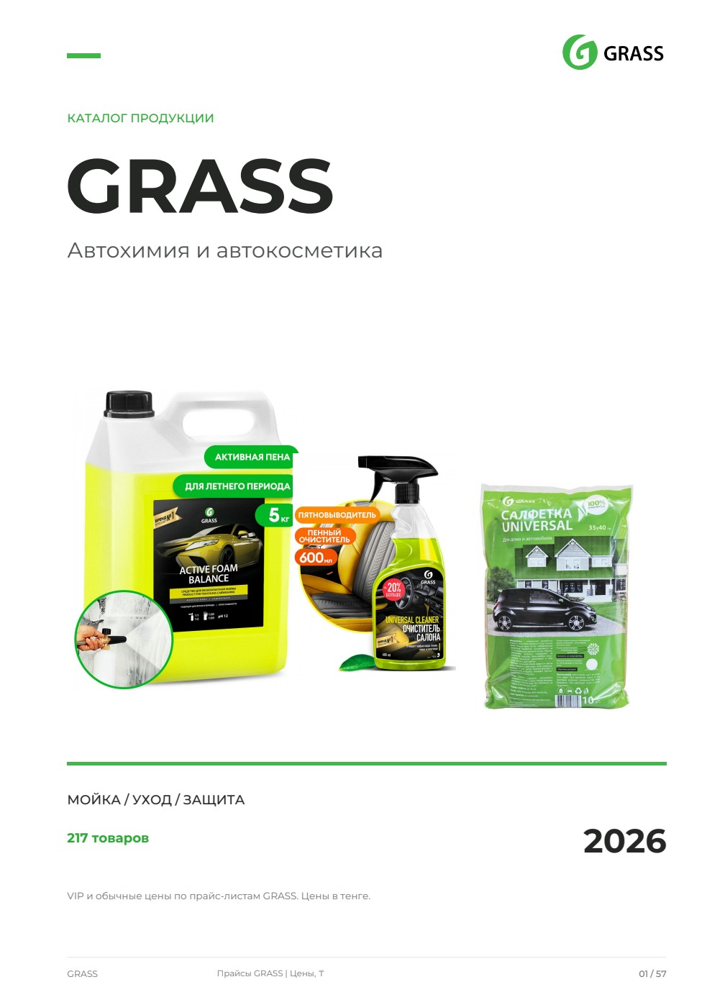
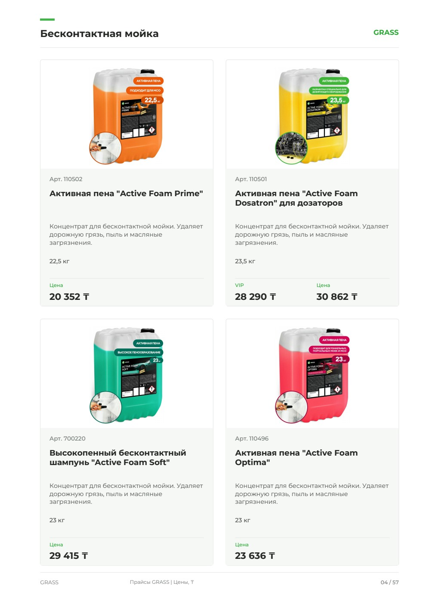
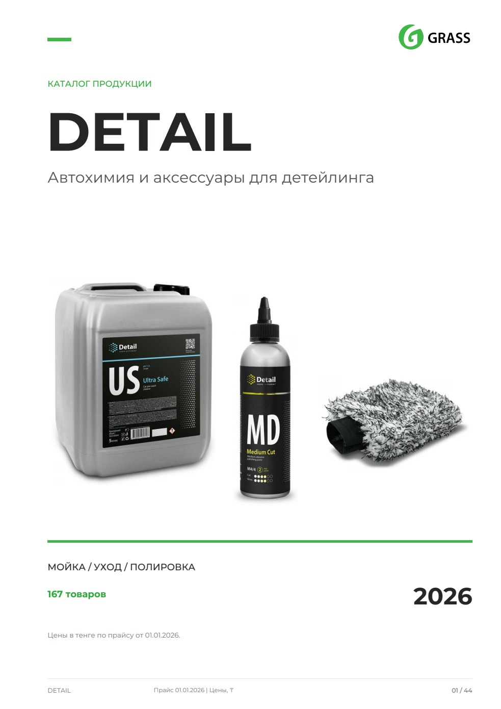
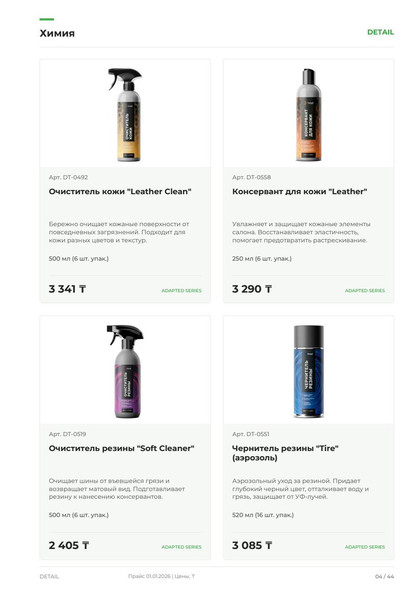
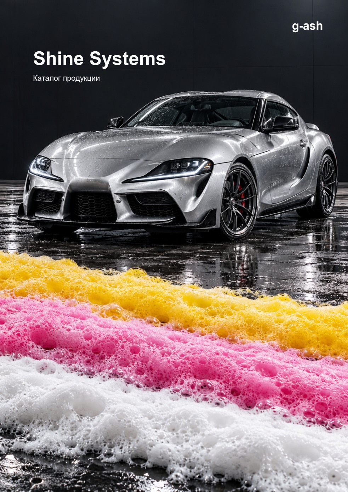
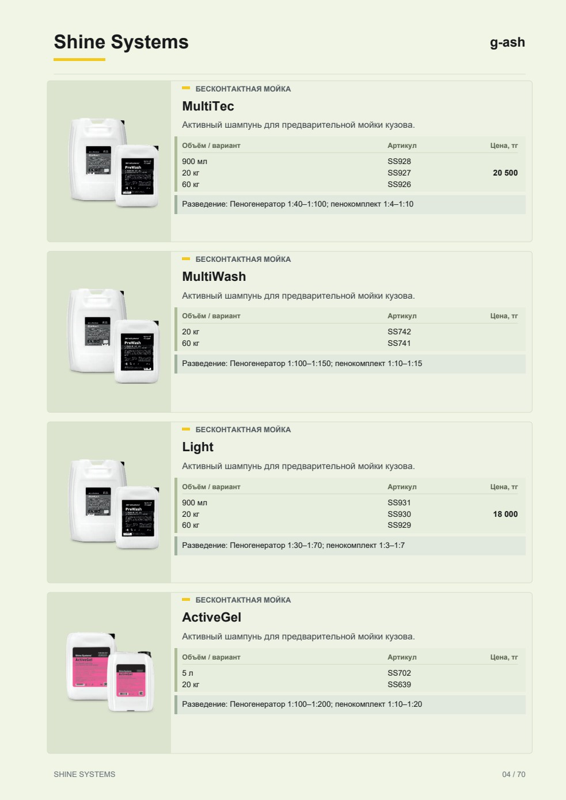

GRASS
Автохимия и автокосметика. 57 страниц.
Открыть PDFПолный каталог, 41,1 МБ


GRASS, DETAIL и Shine Systems. Три готовых каталога автохимии и средств для детейлинга.
Автохимия и автокосметика. 57 страниц.


Средства и аксессуары для детейлинга. 44 страницы.


Каталог продукции. 70 страниц.


Каталоги представлены как примеры оформления. Цены относятся к дате сборки файлов.
Пришлите список, фотографии и пример оформления.